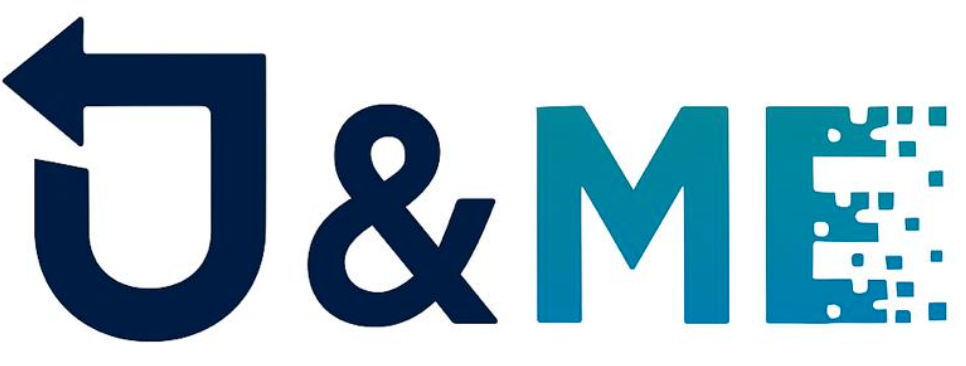

Call for entries

Teams may enter one or more of the face, speech, and concept-unlearning tracks. Face and speech model choice is open. Final artifacts are submitted through separate track-specific Google Forms.
Model-agnostic face identity unlearning with common challenge evaluation.
Model-agnostic speaker identity unlearning with speaker and utility preservation metrics.
Legacy concept unlearning with the published benchmark protocol.
Shareable link to the final checkpoint using any accessible cloud-storage provider.
Complete GitHub repository with dependencies and exact version.
Commands and documentation required to test the submission.
Open the current submission page
For any submission-related query, contact genmu.challenge.2025@gmail.com.
Final submission: 10 July 2026. Evaluation and results declaration: 25 July 2026. The website leaderboard is updated as submissions are verified.